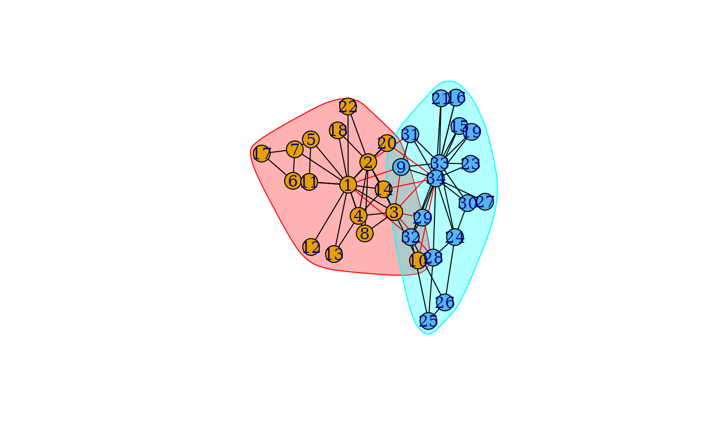

Finding community structure of a graph using the Leiden algorithm of Traag, van Eck & Waltman.
Source:R/community.R
cluster_leiden.RdThe Leiden algorithm is similar to the Louvain algorithm,
cluster_louvain(), but it is faster and yields higher quality
solutions. It can optimize both modularity and the Constant Potts Model,
which does not suffer from the resolution-limit (see preprint
http://arxiv.org/abs/1104.3083).
Usage
cluster_leiden(
graph,
objective_function = c("CPM", "modularity"),
...,
weights = NULL,
resolution = 1,
resolution_parameter = deprecated(),
beta = 0.01,
initial_membership = NULL,
n_iterations = 2,
vertex_weights = NULL
)Arguments
- graph
The input graph, only undirected graphs are supported.
- objective_function
Whether to use the Constant Potts Model (CPM) or modularity. Must be either
"CPM"or"modularity".- ...
These dots are for future extensions and must be empty.
- weights
The weights of the edges. It must be a positive numeric vector,
NULLorNA. If it isNULLand the input graph has a ‘weight’ edge attribute, then that attribute will be used. IfNULLand no such attribute is present, then the edges will have equal weights. Set this toNAif the graph was a ‘weight’ edge attribute, but you don't want to use it for community detection. A larger edge weight means a stronger connection for this function.- resolution
The resolution parameter to use. Higher resolutions lead to more smaller communities, while lower resolutions lead to fewer larger communities.
- resolution_parameter
![[Superseded]](figures/lifecycle-superseded.svg) Use
Use resolutioninstead.- beta
Parameter affecting the randomness in the Leiden algorithm. This affects only the refinement step of the algorithm.
- initial_membership
If provided, the Leiden algorithm will try to improve this provided membership. If no argument is provided, the aglorithm simply starts from the singleton partition.
- n_iterations
the number of iterations to iterate the Leiden algorithm. Each iteration may improve the partition further.
- vertex_weights
the vertex weights used in the Leiden algorithm. If this is not provided, it will be automatically determined on the basis of the
objective_function. Please see the details of this function how to interpret the vertex weights.
Value
cluster_leiden() returns a communities()
object, please see the communities() manual page for details.
Details
The Leiden algorithm consists of three phases: (1) local moving of nodes, (2) refinement of the partition and (3) aggregation of the network based on the refined partition, using the non-refined partition to create an initial partition for the aggregate network. In the local move procedure in the Leiden algorithm, only nodes whose neighborhood has changed are visited. The refinement is done by restarting from a singleton partition within each cluster and gradually merging the subclusters. When aggregating, a single cluster may then be represented by several nodes (which are the subclusters identified in the refinement).
The Leiden algorithm provides several guarantees. The Leiden algorithm is typically iterated: the output of one iteration is used as the input for the next iteration. At each iteration all clusters are guaranteed to be connected and well-separated. After an iteration in which nothing has changed, all nodes and some parts are guaranteed to be locally optimally assigned. Finally, asymptotically, all subsets of all clusters are guaranteed to be locally optimally assigned. For more details, please see Traag, Waltman & van Eck (2019).
The objective function being optimized is
$$\frac{1}{2m} \sum_{ij} (A_{ij} - \gamma n_i n_j)\delta(\sigma_i, \sigma_j)$$
where \(m\) is the total edge weight, \(A_{ij}\) is the weight of edge \((i, j)\), \(\gamma\) is the so-called resolution parameter, \(n_i\) is the node weight of node \(i\), \(\sigma_i\) is the cluster of node \(i\) and \(\delta(x, y) = 1\) if and only if \(x = y\) and \(0\) otherwise. By setting \(n_i = k_i\), the degree of node \(i\), and dividing \(\gamma\) by \(2m\), you effectively obtain an expression for modularity.
Hence, the standard modularity will be optimized when you supply the degrees
as vertex_weights and by supplying as a resolution parameter
\(\frac{1}{2m}\), with \(m\) the number of edges. If you do not
specify any vertex_weights, the correct vertex weights and scaling of
\(\gamma\) is determined automatically by the
objective_function argument.
References
Traag, V. A., Waltman, L., & van Eck, N. J. (2019). From Louvain to Leiden: guaranteeing well-connected communities. Scientific reports, 9(1), 5233. doi: 10.1038/s41598-019-41695-z, arXiv:1810.08473v3 [cs.SI]
See also
See communities() for extracting the membership,
modularity scores, etc. from the results.
Other community detection algorithms: cluster_walktrap(),
cluster_spinglass(),
cluster_leading_eigen(),
cluster_edge_betweenness(),
cluster_fast_greedy(),
cluster_label_prop()
cluster_louvain()
cluster_fluid_communities()
cluster_infomap()
cluster_optimal()
cluster_walktrap()
Community detection
as_membership(),
cluster_edge_betweenness(),
cluster_fast_greedy(),
cluster_fluid_communities(),
cluster_infomap(),
cluster_label_prop(),
cluster_leading_eigen(),
cluster_louvain(),
cluster_optimal(),
cluster_spinglass(),
cluster_walktrap(),
compare(),
groups(),
make_clusters(),
membership(),
modularity.igraph(),
plot_dendrogram(),
split_join_distance(),
voronoi_cells()
Examples
g <- make_graph("Zachary")
# By default CPM is used
r <- quantile(strength(g))[2] / (gorder(g) - 1)
# Set seed for sake of reproducibility
set.seed(1)
ldc <- cluster_leiden(g, resolution = r)
print(ldc)
#> IGRAPH clustering leiden, groups: 2, mod: NA
#> + groups:
#> $`1`
#> [1] 1 2 3 4 5 6 7 8 10 11 12 13 14 17 18 20 22
#>
#> $`2`
#> [1] 9 15 16 19 21 23 24 25 26 27 28 29 30 31 32 33 34
#>
plot(ldc, g)
